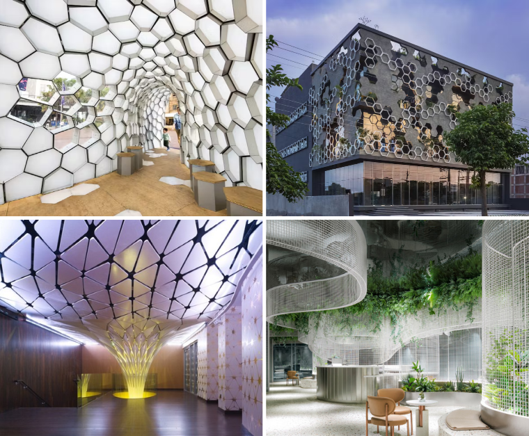
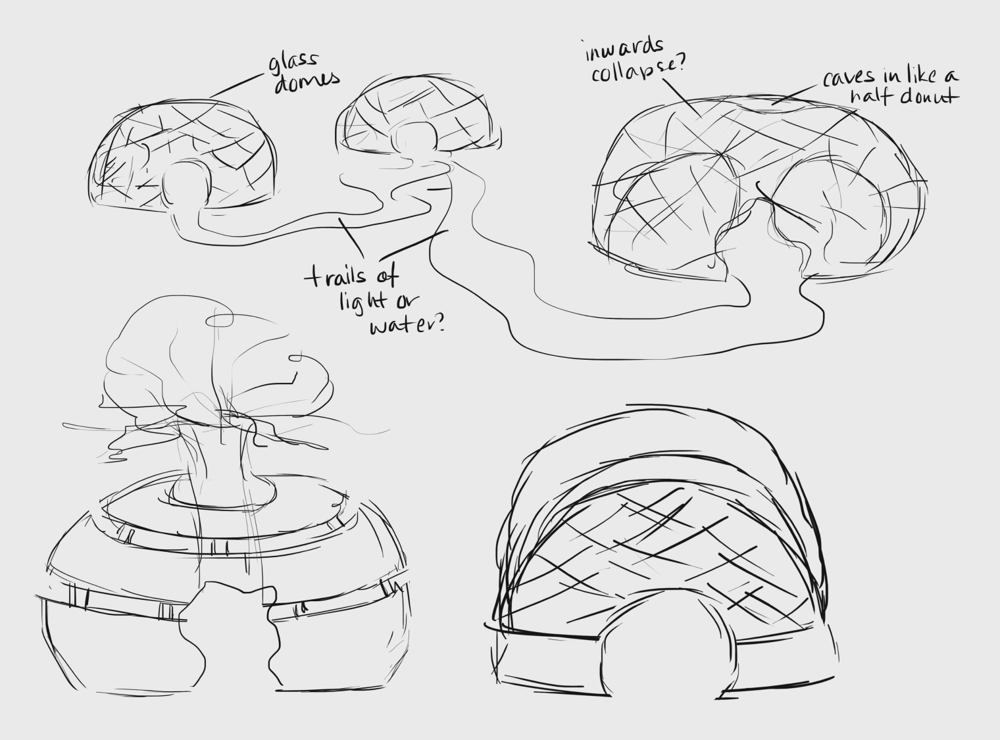
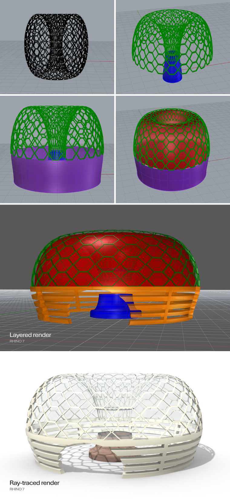

Eco Domes is a project concept aimed at creating immersive public spaces with sustainable
integrations and accessibility for all age demographics. The domes are designed to be placed in
Queen
Victoria Park, located at the Niagara Falls waterfront on the Canadian side of the border. Utilizing
the benefits of
integrated greenery for oxygen reproduction, they provide a resting space for tourists and encourage
visitors to interact with public art.


The structure of the domes was inspired by four public design examples: the
2014 "Cellular Tessellation"
pavilion in Sydney, Australia; the Hexalace
building in Mohali, India; the
Conga Room at the LA LIVE
nightclub
in Los Angeles, USA; and the interior of the Vista
Coffee
Shop in Guangzhou, China.

A key element from all examples is the grid/honeycomb pattern used to form ceilings and exterior
supports. This was used on the roof of the domes, protecting the interior polycarbonate ceiling
while simultaneously creating interesting lighting patterns inside. The funnel form from the LA LIVE
nightclub was merged with the integrated greenery from the Vista Coffee Shop to create the nature
component that visitors can sit around.

Rhino 7's panelling tools were used in the creation of the hexagonal grid that covers
the roof of each dome. Between the grid is a polcarbonate dome to protect visitors from external
weather elements; this material has been used in greenhouses to regulate heat and would be
appropriate for days when sun exposure to the domes is at a high level. Layered sections on the
lower half have been added to improve air circulation within the structure, inviting a partial form
of privacy without being overly closed in.
All materials were
generated
using the Chaos V-Ray plugin for Rhino 7.



During my initial research, I wanted to select a location that would maximize public interaction with
the domes and realized that there is no better place for this installation that an area that is at
the heart of Niagara Falls tourism: Queen Victoria Park. As a public park that tends to be heavily
populated by tourists year-round, it has varying uses based on the season. During the summer, it
becomes a picnic spot and play area for families in the summer; during the winter, it hosts the
annual Festival of Light and is home to several light displays. For certain events, the Niagara
Parks Commission will set up a stage for live performances, which always attracts large
crowds.


Satellite imagery courtesy of Google Earth®.